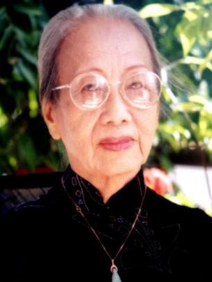

Phụ Lục 1

ôi không nhớ chúng tôi đã quen với Nguiễn Hữu Ngư [1] trong trường hợp nào. Kể về tuổi tác thì Ngư nhỏ hơn tôi khoảng 6, 7 tuổi. Ngư lại là bạn học ban Tú tài trường Trung học Pétrus Ký với Lê thị Hàn, cô em gái thứ tư của tôi.
Lúc ấy tôi đã lập gia đình với anh Hồng Tiêu Nguyễn Đức Huy và đã là mẹ của hai con, sau khi tôi không còn chủ trương tờ báo Tân Thời. Anh Hồng Tiêu cũng chưa hề quen biết Ngư. Và khi tôi bước vào làng báo thì Ngư mới chỉ là một học sinh trung học.
Nhưng rồi tại sao sau này Nguiễn Hữu Ngư lại là một người bạn vai em thân thiết của gia đình chúng tôi, và các con tôi gọi Ngư bằng chú rất thân tình?
Có lẽ tôi quen Ngư qua những câu chuyện do em Hàn kể về Ngư. Theo lời em tôi, Ngư là một học sinh thông minh, học giỏi, có tài hùng biện, đối đáp mau lẹ. Và Ngư cũng là con một nhà cách mạng lão thành chống thực dân, đã từng bị đưa đi đày ở nhà tù Lao Bảo. Ngư còn có năng khiếu làm thơ từ thời còn đi học, mà sau đây là hai bài tiêu biểu làm tặng bạn bè (trong đó có Giáo sư Trần văn Khê) mà tôi còn lưu trữ trong tư liệu riêng:
Rồi sẽ ra sao
Đời tôi rồi sẽ ra sao
Đò đưa không khách ai rào đường đi
Tình tôi? Nói đến làm gì
Đi hoài không lại, thôi thì từ đây
Tôi xin giữ chặt kẻo bay
Hương lòng sót để cho vay kiếm lời
Nhưng bao giờ mới gặp người
Mượn tuy có một mà bồi hơn trăm?
Ngoài kia rực rỡ trăng rằm
(Trung học Trương Vĩnh Ký 1938)
Lưu luyến
Thôi nhé, Trường em, hãy đợi chờ
Vì anh từ giã chốn nên thơ
Sắp xa cảnh cũ người quen biết
Với cái tương lai mờ mịt mờ
Con đường nho nhỏ nhánh gòn nghiêng
Máy nước êm êm gió nhẹ hiền
Bãi cỏ xanh xanh ngồi thủ thỉ
Hành lang rộn rã guốc đua chen
Lớp học nghiêm trang thầy đếm bước
Nhà ăn chén dĩa mệt người xem
Bao nhiêu xe đạp chờ chuông đổ
Tà áo màu chì dáng dáng mềm
Cái bụng nhà ai đi lúc lắc
Giọng ai sang sảng ngâm thơ Đường
Gậy ai khuya khoắc còn lên xuống
Khiến bóng đèn xanh nói với giường...
Thôi biết tìm đâu bao cảnh cũ
Tìm đâu cho thấy ít người thân
Xa em, Trường hỡi, là chôn kỹ
Cả một trời thơ chết chín phần
Những phen mơ ước này kia nọ
Những phút hờn căm đợi những gì
Thương, ghét, gần, xa ai chẳng nhớ
Tình người trai trẻ rộng đường đi
Nhưng Đời đợi sẵn nhăn mày đón
Bao kẻ lo âu giã mái Trường
Mặt trắng còn đâu trong trắng nữa
Đầu xanh giờ tắm bụi mười phương
Trường ơi, em hãy như người chị
Để một ngày nao có kẻ nào
Lặng lẽ trở về thăm chốn cũ
Thì em chớ đón với mày cau
(Trung học Trương Vĩnh Ký - 1938)
Bấy giờ Ngư được giáo sư Phạm Thiều của trường Pétrus Ký đem về nuôi cho ăn học. Thầy Phạm Thiều cũng có một cô em gái học đồng lớp với Ngư và em Hàn, đó là cô Phạm thị Nhiệm, về sau là phu nhân tỉnh trưởng Kiến Hòa Phạm Ngọc Thảo (thời Ngô Đình Diệm).
Những người học trường ấy, sau này phần đông tham gia phong trào yêu nước chống thực dân Pháp, trong số đó có nhiều nhân tài xuất sắc như nhạc sĩ Lưu Hữu Phước, tiến sĩ Trần văn Khê, cùng nhiều nhân tài trí thức khác mà tôi không nhớ hết.
Các bạn gái của Hàn đến nhà chơi hay kể chuyện về Ngư, nên tôi đã có được vài nét chấm phá về con người kỳ lạ này. Các cô bảo rằng Ngư rất thông minh, cái thông minh của một người mắc bệnh tâm thần, khi vui không kềm chế được suy nghĩ và hành động của mình. Cũng có người nói Ngư khùng, Ngư điên, nhưng theo tôi nhận xét như vậy là khắc khe, vì điên khùng thì sao có thể là một học sinh giỏi, lanh trí và còn xuất khẩu thành thơ nữa.
Có lẽ tôi biết và quen Ngư gián tiếp vào lúc bấy giờ mà không hay, còn Ngư thì qua em Hàn và các bạn gái của Hàn đã biết về tôi, “chị Bạch Vân của Hàn”, nhưng chưa gặp mặt lần nào, và tôi cũng chưa hề biết mặt Ngư.
Có lần em Hàn mang vào lớp tập thơ tôi chép tay những bài thơ hay của các nhà thơ Pháp như Victor Hugo, Lamartine, Alfred de Musset, Alferd de Vigny và nhiều nhà thơ nổi tiếng khác, cùng với những bài dịch ra Việt ngữ. Và những bài thơ Tiễn chân anh Khóa của Á Nam Trần Tuấn Khải, thơ dịch của Băng Dương, thơ của anh Hồng Tiêu, và thơ của các thi sĩ Việt Nam đương thời. Nhưng trong tập ấy, tôi chép nhiều nhất là thơ của Comtesse de Noailles. Vì em Hàn đem ra xem trong giờ chơi, cùng các bạn xúm lại đọc nên giáo sư Nguyễn văn Nho ngó thấy, cầm lên xem rồi bảo em Hàn cho mượn về đọc mấy ngày sau mới trả. Khi trả, giáo sư Nho có nói với Hàn: “Chị của em thế nào rồi cũng viết văn, vì đã có một tâm hồn yêu thích văn thơ đến thế này”.
Sau khi quen với gia đình chúng tôi. Ngư cho biết: Vì lẽ đó cho nên lúc ấy Ngư đã tò mò muốn biết về tôi.
Rồi năm 1942, Mỹ thả bom Sài Gòn, tôi phải đưa các con về Quảng Ngãi quê chồng. Khi đó tôi sống tại thị xã Quảng Ngãi với ba đứa con và đang có thai chờ sanh, thì vừa lúc quân Nhật đầu hàng, Cách mạng tháng Tám bùng lên dưới sự lãnh đạo của nhà cách mạng Hồ Chí Minh. Không khí hăng say cách mạng của tỉnh Quảng Ngãi bừng lên với cờ đỏ sao vàng trong khí thế chưa từng thấy.
Giữa lúc ấy, anh Hồng Tiêu vào Nam, còn mẹ con tôi thì hòa trong hy vọng của nhịp sống đất nước đang thay đổi tưng bừng. Thời gian ấy, tôi sanh đứa con thứ tư, cũng dịp này tôi quen với cô Thoại Dung, một thiếu nữ thích hoạt động xã hội và thường ghé qua nhà xem chừng tôi có cần gì khi sinh, để giúp đỡ. Và Thoại Dung cũng là người hàng xóm vui vẻ trẻ trung của chúng tôi.

Thế rồi, một hôm tôi đang bồng đứa con sơ sinh đứng chơi trước cửa - nhà tôi ở sát con đường thiên lý (Quốc lộ I) cạnh Bangalow (nhà khách của tỉnh Quảng Ngãi bấy giờ). Có một đoàn người vai mang balô đi ngang qua, đó là những sinh viên từ miền Nam ra Bắc để tham gia phong trào kháng chiến cứu nước. Trong đoàn người ấy (về sau tôi được Ngư cho biết là có nhạc sĩ Lưu Hữu Phước), bỗng có một người đang đi chợt lùi lại nhìn, rồi tạt vào ngó sững tôi và hỏi:
- Sao trông chị giống chị Hàn quá? Có phải chị là chị Bạch Vân không?
Tôi đang ngơ ngác chưa biết người khách này là ai, thì người ấy quả quyết:
- Ồ, đúng là quả đất tròn. Tại sao chị lại ở đây?
Tiếp theo đó, người khách ấy đọc luôn mấy câu thơ gì đó, nay tôi không nhớ rõ. Khi ấy, đoàn người đi đã khá xa, trong đoàn có người chạy ngược lại kêu lớn:
- Ngư, đi chớ! Phải ra đến Châu Ổ trước khi trời tối nhé.
Ngư! Khi nghe tên Ngư làm tôi nhớ lại lời em Hàn và các bạn thường nói với nhau, một Nguiễn Hữu Ngư tóc húi ngắn, mang kính cận dày, người ốm nhom, ốm nhách. Đúng đây là Nguiễn Hữu Ngư và đó là lúc Ngư đang tỉnh, sau những cơn tâm trí rối loạn đến phải bỏ học trường Cao đẳng Sư phạm.
Rồi mấy năm sau, khi anh Hồng Tiêu từ Sài Gòn trở về Quảng Ngãi với vợ con được vài năm, chúng tôi nghe bạn bè kể với nhau là có một người điên, đeo kính cận, vai mang ba-lô đi từ Bắc vào Nam, bị bắt giam ở nhà lao Quảng Ngãi. Khi bị bắt, anh ta la hét om sòm rằng mình đã ra Hà Nội để gặp Hồ Chủ Tịch, nhưng không muốn ở lại, nên mang ba-lô trở vào Nam can chi mà bắt, ta đâu phải Việt gian. Vì la hét om sòm cả ngày cho nên người ta phải chuyển về trại giam của huyện lỵ Nghĩa Hành. Thời gian Ngư bị giam ở Quảng Ngãi bao lâu tôi không nhớ rõ. Chỉ còn nhớ lời một người công an ở đó kể lại, anh ta cứ đòi gặp các cấp lãnh đạo để tường trình cho biết anh là thành phần yêu nước phải thả cho anh về Nam để tiếp tục chiến đấu chống xâm lăng. Rồi ngày nào anh ta cũng sắp sẵn ba-lô ngồi chờ giấy ân xá. Đợi hoài không được, một hôm, anh ta làm ra vẻ hiền lành, thản nhiên cười nói với người công an đang canh giữ mình:
- Tôi ra một câu đối nhá, nếu anh đối được thì tôi để anh bắt. Không, thì phải thả tôi đi.
Rồi Ngư đọc:
- Râu rĩ râu ria ra rậm rạp.
Người công an nhìn thấy người đang bị nhốt râu ria đầy hàm, mặt mũi vì thiếu ăn nên choắt lại chỉ còn da bọc xương, đôi mắt trắng dã lờ đờ sau cặp kính cận dày mụp. Người công an còn đang lúng túng vì có phần thương hại ngươi điên, thì Ngư liền đọc vế đối tiếp theo: Ngông nghênh ngốc nghếch ngó ngu ngơ. Rồi nhào đại ra bỏ chạy mất dạng.
Chúng tôi nghe, biết ngay đó là Ngư. Cũng may hôm ấy Ngư gặp được người công an có lòng nhân cho nên anh ta mới để cho Ngư chạy thoát... Rồi không biết sau đó Ngư làm cách nào ra được khỏi tỉnh Quảng Ngãi. Chỉ biết trong thời gian này, dù điên điên khùng khùng, Ngư cũng vẫn làm thơ rất hay, trong đo có bài Má mà tôi chỉ còn nhớ được hai câu đầu và hai câu cuối vì chúng quá ấn tượng, như sau:
Má ơi, con Má điên rồi
Má còn trông đứng đợi ngồi mà chi?
Và:
Ầu ơ... Ví dầu con Má có sao
Có điên có dại Má nào hết thương
Có lẽ đây chính là những câu thơ hay nhất mà một người điên có thể làm cho mẹ mình!
Trong thị xã Quảng Ngãi lúc bấy giờ có trường Mẫu giáo Tơ Vàng do cô Thoại Dung vừa làm hiệu trưởng vừa làm giáo viên, dạy dỗ một số thiếu nhi trong thị xã. Trường cũng nằm trên Quốc lộ 1. Cô giáo Thoại Dung người nhỏ thó, học trường Trung học Vinh về, cũng là hạng nữ lưu thích làm công tác xã hội. Ngày Cách mạng bùng nổ ở Quảng Ngãi, cô là người đầu tiên hăng hái tham gia, cầm cờ đi đầu trong cuộc biểu tình và tham dự nhiều buổi tiếp chiến sĩ ở các chiến khu về. Qua những ngày sôi động, cuộc sống trở lại bình thường, thì cô Thoại Dung mở lớp Mẫu giáo.
Cô Thoại Dung dạy các em vừa học vừa múa hát, cô bày những trò chơi để các em ham thích đến trường và siêng năng học. Sau buổi học trong lớp, cô dẫn đám học trò cỡ năm, sáu tuổi, trong số ấy có hai con tôi là Nghi Xương và Trạch, ra khoảng sân vườn rộng sau trường. Nối đuôi một đoàn thầy trò trước sau, bước nhịp nhàng, cùng múa hát: Một ngón tay nhúc nhích này! Cũng đủ cho ta vui này! Hai ngón tay nhúc nhích... và lần lượt vừa hát vừa đếm đủ mười ngón tay! Cây lá trong vườn xanh um, mặt trời chiếu qua kẽ lá, cảnh vật mát mẻ êm dịu làm bối cảnh cho thầy trò hát ca nhảy múa trong bầu không khí trong lành rất thơ mộng thanh bình.
Thế rồi một hôm, thầy trò cô Thoại Dung đang chạy nhảy múa hát trong mảnh vườn thơ mộng ấy, bỗng từ đâu xuất hiện một thanh niên vai mang ba-lô, tóc hớt ngắn, đến nối đuôi nhau phía sau đoàn trẻ, rồi thản nhiên nhảy múa tung tăng và cũng hát một ngón tay nhúc nhích, hai ngón tay nhúc nhích... y như cô giáo với học trò đang múa hát. Cô giáo và học trò vô tình cứ chạy vòng vòng và múa hát, chẳng ai để ý đến cái anh chàng tham gia bất ngờ vào cuộc chơi một cách lý thú như vậy. Nhưng đến một khúc quanh, cô giáo mới giựt mình khi trông thấy người ấy chạy nhảy múa hát vui đùa hăng say còn hơn thầy trò mình nữa. Rồi ngày nào cũng vậy, cứ đến giờ tập hát thì anh chàng ấy lại xuất hiện theo cái kiểu “ban đầu ngoài sân sau lần vào bếp”. Rồi anh ta đứng ngoài cửa sổ nhìn vào lớp trong giờ dạy để nghe thầy trò cô giáo Thoại Dung ê... a... đánh vần.
Đây không phải là cảnh tượng một khách giang hồ dừng chân dưới lầu hoa, say sưa lắng nghe tiếng đàn thánh thót du dương của một giai nhân; mà là nỗi đam mê của tuổi trẻ, sau lúc tâm hồn mệt mỏi bởi một chuyến năng nổ hăng say chạy theo lý tưởng mà chí nguyện không đạt thành. Đang khi mệt mỏi tạm dừng chân, bỗng gặp một tâm hồn giản dị hồn nhiên, sống cho thế hệ, bồi đắp dắt dìu những mầm non của đất nước để phục vụ cho đời một cách thản nhiên, không vụ lợi và cũng không hề nghĩ là mình đang làm một công việc hữu ích.
Và rồi hai tâm hồn cùng một ý hướng muốn phục vụ cho mục đích cao cả ấy gặp nhau, thông cảm nhau. Để rồi sau đó, bất chấp cơ quan an ninh đang truy lùng. Ngư quyết định ở lại Quảng Ngãi chỉ vì cô giáo Thoại Dung và đám trẻ ngây thơ vui đùa múa hát với những “ngón tay nhúc nhích” đầy quyến rũ. Và, mối tình Dung-Ngư nẩy nở vào dịp thị xã Quảng Ngãi có lịnh tiêu thổ kháng chiến. Dung theo gia đình tản cư lên Đồng Cọ, chúng tôi cũng dắt díu đàn con chạy về chợ Gò vùng Mỹ Thịnh nơi có thắng cảng Thạch Bính Tà Dương.
Vì sinh kế vật chất, tôi quên bẵng mối tình thơ mộng của hai người bạn trẻ ấy. Mãi một hôm, Ngư tìm đến Mỹ Thịnh nhờ anh Hồng Tiêu đứng chủ hôn. Thì ra người yêu mà Ngư định cưới là cô giáo Thoại Dung của các con tôi và cũng là cô bạn trẻ của chúng tôi.
Vợ chồng tôi có trực tiếp lo lắng một cách chân tình với cô Thoại Dung, cho Dung biết Ngư là một người không bình thường, làm vợ Ngư chưa hẳn hạnh phúc, mà phải mất mát nhiều, hy sinh nhiều, bởi vì Ngư còn nuôi mộng quá lớn, chưa hẳn đã chịu dừng chân trong mái nhà tranh với hai quả tim vàng. Nhưng cô Thoại Dung quả quyết trả lời: “Em sẵn sàng hy sinh để giúp anh ấy đạt chí lớn”.
Vậy là sau đó anh Hồng Tiêu đứng ra thay họ nhà trai lo đám cưới cho Ngư-Dung. Cũng từ ngày ấy, Ngư là em của vợ chồng tôi. Còn cô giáo Thoại Dung của con tôi đã trở thành thiếm Ngư của gia đình tôi.
Tôi còn nhớ thời đó chúng tôi quá nghèo, cho nên tôi chỉ tặng đôi tân hôn Dung-Ngư một cặp gối thêu hai con chim én đang tung cánh.
Năm 1952, tôi dẫn đàn con thơ lặn lội về Sài Gòn, anh Hồng Tiêu còn ở lại Quảng Ngãi một thời gian mới vào sau. Còn Dung-Ngư hình như vào Sài Gòn cuối năm 1952 thì phải.
Vào Sài Gòn, Ngư cũng dạy học, viết báo, còn cô giáo Thoại Dung dạy trường mẫu giáo Aurope ở đường Phan Đình Phùng (nay là trường Lương Định Của đường Nguyễn Đình Chiểu), bởi tâm hồn Thoại Dung vốn rất yêu thương trẻ.
Thời gian đó Ngư viết báo Bách Khoa, phụ trách mục phỏng vấn các nhân vật, nghệ sĩ, nhà văn, nhà giáo. Thỉnh thoảng tôi cứ bị “Phóng viên Ngu Ý” phỏng vấn về vấn đề viết văn, dạy học.
Còn nhớ năm 1965, khi tôi ổn định phần nào cuộc sống ở Sài Gòn, một hôm đang làm việc tại tòa soạn báo Sàigòn Mới, Ngư gõ cửa bước vào nói liền:
- Chị Tùng Long, chị đi với tôi đến gặp một người...
Tôi ngắt lời:
- Người nào vậy? Chú không thấy tôi đang viết gấp mấy trang tiểu thuyết cho báo kịp lên khuôn sao?
- Vậy tôi ra ngoài chờ, chị cứ viết xong rồi sẽ đi.
Sau khi viết bài cho trang báo xong, tôi ra gặp Ngư, mới biết Ngư đã lãnh trách nhiệm với ông hiệu trưởng và ông giám học trường Tân Thịnh, muốn mời tôi dạy chương trình Pháp văn và Việt văn. Tôi ngần ngại nói:
- Bộ chú không thấy tôi không còn thời gian để lãnh viết thêm cho vài tờ báo đang mời viết sao. Còn giờ đâu mà dạy học nữa?
Ngư thản nhiên nói như ra lịnh:
- Chị phải thu xếp để dạy học. Chị quên là chị còn nghề dạy học nữa sao? Chị Tùng Long à! Ở đất Sài Gòn này phải có hai nghề, một nghề tay phải và một nghề tay trái thì mới sống nổi.
Thế là Ngư lên xe đạp, tôi lên xích lô, theo Ngư đến nhà ông Phan Ngô là giám học trường Tân Thịnh. Tôi phải lãnh dạy hai môn Việt văn và Pháp văn.
Sau đó có mấy trường nữa cũng muốn mời, nhưng tôi chỉ thu xếp công việc để lãnh dạy thêm hai trường Đạt Đức và Les Lauriers.
Cũng nhờ Ngư mà hôm nay đã tám mươi hai tuổi, vẫn có học trò cũ của tôi ở các trường ấy nay đã trên dưới sáu mươi tuổi đến thăm. Những người ấy đều thành đạt, có địa vị trong xã hội. Thật là một niềm vui rất hiếm với tôi lúc này.
Lại một lần nữa, vào lúc 16 giờ, khi tôi vừa dạy hai tiết ở trường, ra gọi taxi chạy về tòa báo Sàigòn Mới, đến nơi đã thấy Ngư chờ ở phòng khách.
Thấy tôi, Ngư mừng quá, nói ngay:
- Cứ lo là chiều nay chị không về tòa soạn. Thôi, mời chị đi ngay với tôi.
- Chú mời tôi đi đâu vậy?
- Đi gần đây thôi. Đến Đài phát thanh Pháp Á.
- Chú lại bày trò gì nữa đây?
Ngư cười hề hề nói:
- Giới thiệu chị với ông giám đốc, theo yêu cầu của ông ấy...
Tôi khựng lại, toan kiếm cách từ chối, thì Ngư năn nỉ:
- Chị được ổng mời viết và sẽ lên đài nói về vấn đề phụ nữ hoặc nhi đồng, vào mỗi chiều thứ năm lúc 18 giờ hằng tuần. Đây là một việc có ích cho quyền lợi phụ nữ của phụ nữ trong xã hội, là một dịp hiếm có, chị không thể bỏ qua.
Tôi đành phải đi bộ theo Ngư - Ngư dắt theo chiếc xe đạp - từ đường Phạm Ngũ Lão qua Hàm Nghi đến đài Pháp Á.
Rồi đó, mỗi tuần lại có tiếng nói của tôi trên đài phát thanh Pháp Á theo yêu cầu của ông giám đốc đài này. Và chị em độc giả của tôi gởi thư về cho biết họ rất vui khi nghe tiếng nói của tôi.
Cũng nhờ Ngư bắt ép như vậy, mà từ đó về sau, mỗi lần có những dịp nói về vấn đề phụ nữ hoặc nhi đồng, là đài phát thanh Sài Gòn thường mời tôi lên nói chuyện.
Ngư thường giúp bạn bè như vậy, nhưng không bao giờ nghĩ là mình đã giúp, mà cho đó là bổn phận đối với bạn mà thôi.
Bao nhiêu năm trôi qua cho đến một hôm, Ngư ôm một mớ sách, áo quần xộc xệch, vai đeo túi vải, đến thăm chúng tôi và nói với anh Hồng Tiêu:
- Tôi và Dung đã ly dị nhau.
Nghe vậy, tôi và nhà tôi không lấy gì làm ngạc nhiên, mà chỉ nghĩ rằng với tánh nết của Ngư, thế nào rồi cũng có ngày phải như vậy. Nhưng lúc ấy, tôi nói với Ngư:
- Chú nói cái gì lạ vậy? Tại sao lại ly dị? Tại sao tôi không nghe Dung nói?
Về sau, tôi có nghe một người bạn thân của Dung cho hay là Dung không còn chịu nổi tánh bốc đồng của Ngư, vì khi Ngư nổi cơn thì chả lo gì vợ con mà còn làm Dung rất mệt. Dung và Ngư có xin một bé trai về nuôi để làm “đầu con” vì sau thời gian dài chung sống mà không con. Sau khi có đứa con nuôi (Nguiễn Hữu Tuiền) được vài năm thì Dung có thai và sinh được một thằng cu (Nguiễn Hữu Ngiyên) rất kháu khỉnh. Dung phải nhận thêm giờ dạy ở trường Aurope để nuôi con. Lại nữa, Ngư cứ nổi cơn điên đi lang thang nay nhà này mai nhà khác, khi về kiếm chuyện gây gổ với Dung.
Tôi vốn không chủ trương cho vợ chồng ai phân ly khi đã làm cha làm mẹ của đám con cái. Tánh tôi vốn tội nghiệp đám trẻ thơ sống thiếu tình thương dù cha hay của mẹ, bởi hậu quả những cuộc ly hôn! Cho nên lúc ấy tôi đã viết một truyện ngắn đăng trong phụ trang báo Sàigòn Mới, nội dung kể lại mối tình êm đẹp của hai tâm hồn hiểu nhau, yêu nhau, tay nắm tay bước vào đời cốt xây dựng cho đời một cái gì êm đẹp, vậy mà chỉ vì một sự bất hòa trong chốc lát đã bỏ nhau. Mối tình cao quý, đẹp đẽ ngày nào tưởng rằng sẽ đi vào lịch sử, nay lại phải gãy đổ nửa chừng. Qua truyện ngắn ấy, các bạn cũng hiểu là tôi muốn nhắc Dung nhớ lại lời hứa trước ngày nhận làm vợ Ngư. Truyện ngắn ấy Dung có nghe một người bạn đã đọc và kể lại, Dung có ý phiền tôi. Nhưng sau đó, tôi hiểu ra là Ngư cố gây chuyện để phao tin ly dị chỉ vì lý do chính trị, không muốn vợ liên lụy bởi những hoạt động của chồng.
Thong thời gian này, bịnh điên của Ngư tái phát thường uyên. Có lần Ngư đến thăm chúng tôi, sau khi dùng trà với anh Hồng Tiêu, bỗng Ngư đến quỳ xuống trước mặt tôi vừa khóc vừa nói:
- “Chị Tùng Long, chị nghe lời tôi đi. Trong tình thế này, chị không nên viết nữa”.
Tôi cố làm ra vẻ thản nhiên hỏi Ngư:
- Nếu không viết thì lấy gì mà nuôi con? Chú tưởng chỉ dạy học là đủ lo cho mấy đứa nhỏ của tôi sao?
Thế rồi, sau khi Ngư ra về, tôi ngồi vào bàn để viết tiếp mấy cái tiểu thuyết để đưa cho các báo, coi lại không còn cây viết nào trên bàn nữa. Tôi vốn có thói quen dùng viết BIC mực màu đen, và trên bàn viết của tôi lúc nào cũng có 3,4 cây để sẵn. Thì ra, khi nãy Ngư đã lén “chôm” đem đi hết rồi!
Đó là thời kỳ Ngư điên trở lại và sau đó bị đưa vào dưỡng trí viện Biên Hòa, hình như có nhà thơ Bùi Giáng với một ông bác sĩ, cũng vào nằm chung với Ngư thì phải. Trong lúc nằm nhà thương điên, Ngư, Bùi Giáng và ông bác sĩ nọ có làm những bài thơ điên thật tuyệt, chả có vẻ gì là điên loạn cả. Rất tiếc, hiện nay tôi không còn giữ được mấy bài thơ ấy.
Sau ngày 30-4-75, bạn bè, thân quyến mỗi người một ngả, rồi mạnh ai nấy lo miếng cơm manh áo. Đâu còn thời gian tìm gặp để thăm hỏi nhau. Cho đến một hôm Ngư tìm đến thăm anh Hồng Tiêu và tôi, chúng tôi mới biết Ngư đã ra Dưỡng trí viện Biên Hòa, về sống với vợ con và gặp bạn bè cũ, cho nên trông Ngư có vẻ tự tin, khỏe mạnh phần nào. Ngư thấy chúng tôi cũng sống thanh bạch như những ngày trước kia, và các con tôi vẫn đi làm kiếm tiền để nuôi cha mẹ, thì Ngư tỏ vẻ yên lòng.
Trước khi từ giã, Ngư gọi con gái lớn của tôi lại dặn nhỏ:
- Nếu thầy mẹ có bề gì, cháu phải cho chú hay lập tức nhé!
Nhưng than ôi, Ngư đã ra đi trước anh Hồng Tiêu của tôi [2]! Và giờ này trong khi ngồi viết lại những kỷ niệm về Ngu Í - Nguiễn Hữu Ngư theo yêu cầu tha thiết của Thoại Dung, người bạn trẻ của tôi năm nào, trong ký ức tôi vẫn còn đọng lại hai câu thơ hay của Ngư:
Bao nhiêu chí trẻ rồi tro bụi
Một chút tình riêng cũng ngậm ngùi!
cuối Đông Ất Hợi 1995
Chú thích:
[1] Một trong những điểm đặc biệt (và có phải đó cũng là dấu hiệu cho thấy sự bất thường?) của Ngư là từ rất sớm Ngư đã chế kiểu viết chữ riêng: i thay cho y, q thay cho qu, k thay cho kh, c thay cho k, j thay cho gi, f thay cho ph... đi trước rất xa các nhà “cải cách giáo dục” sau này.
[2] Nguyễn Hữu Ngư mất ngày 18-2-1979 tại Sài Gòn.